長期トレンド
JKMとJEPXシステムプライスの推移グラフ
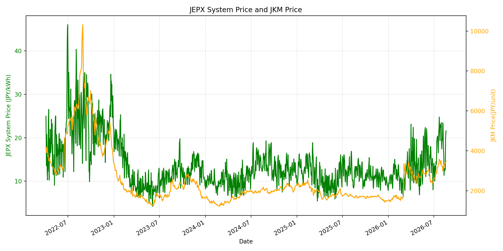
WTIの推移グラフ
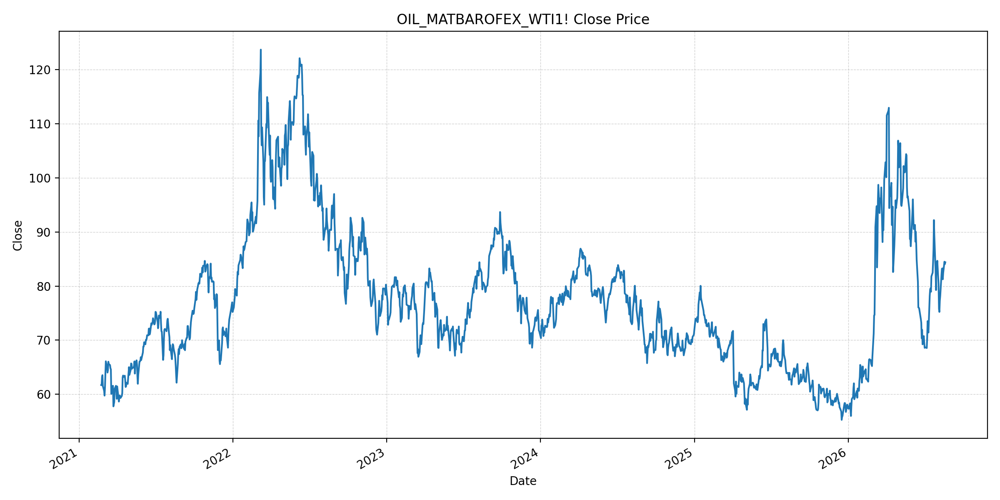
JEPXエリアプライスグラフ（直近一年分）
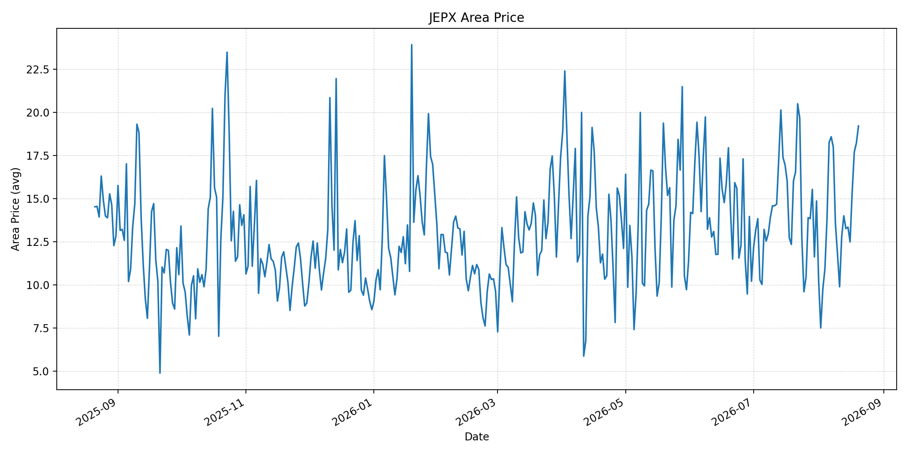
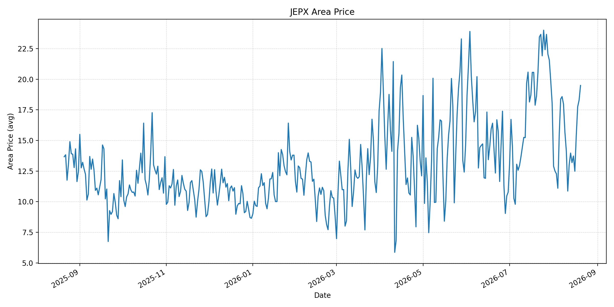
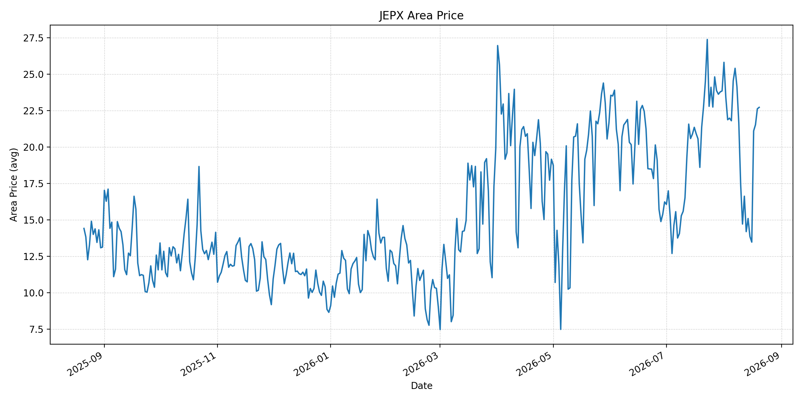
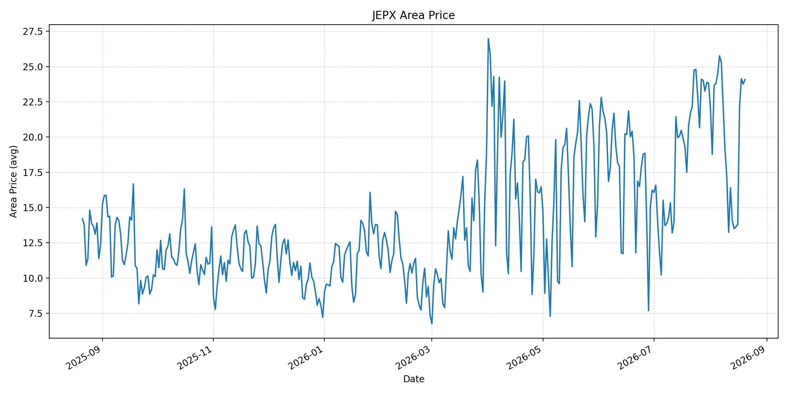
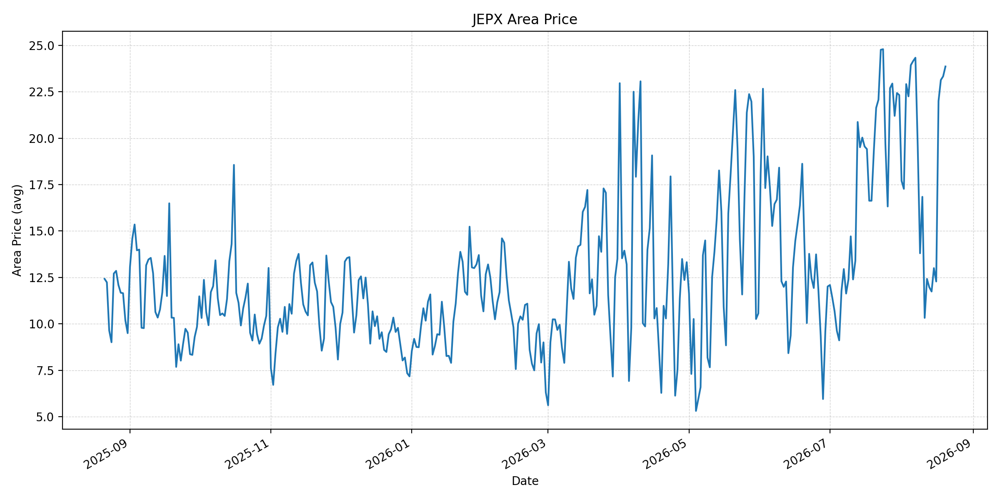
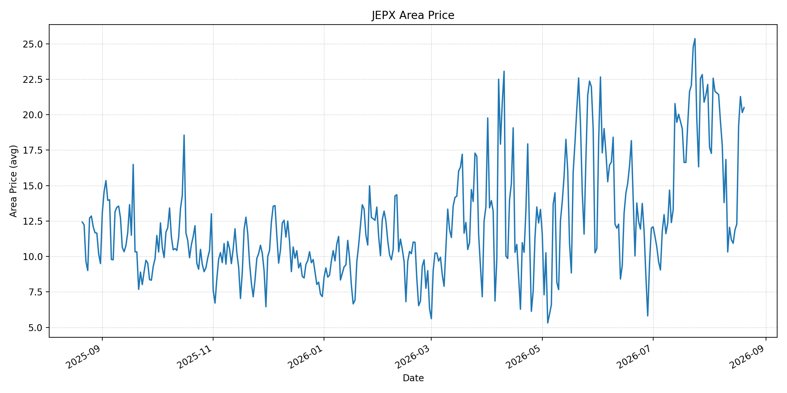
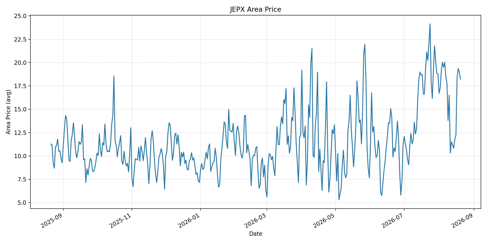
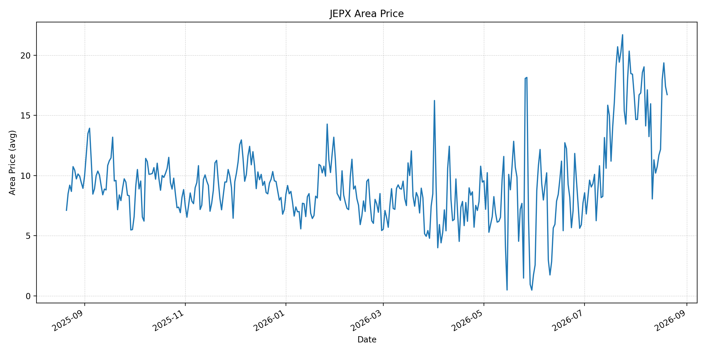
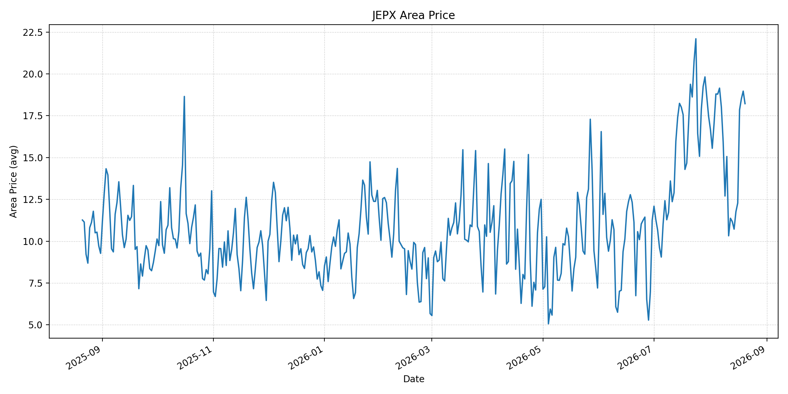
短期トレンド
JKMとJEPXシステムプライスの推移グラフ
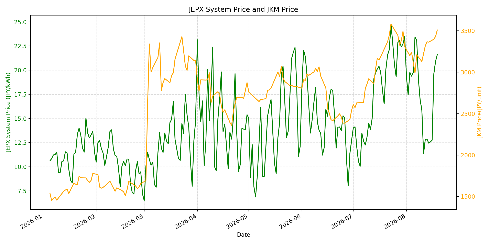
WTIの推移グラフ
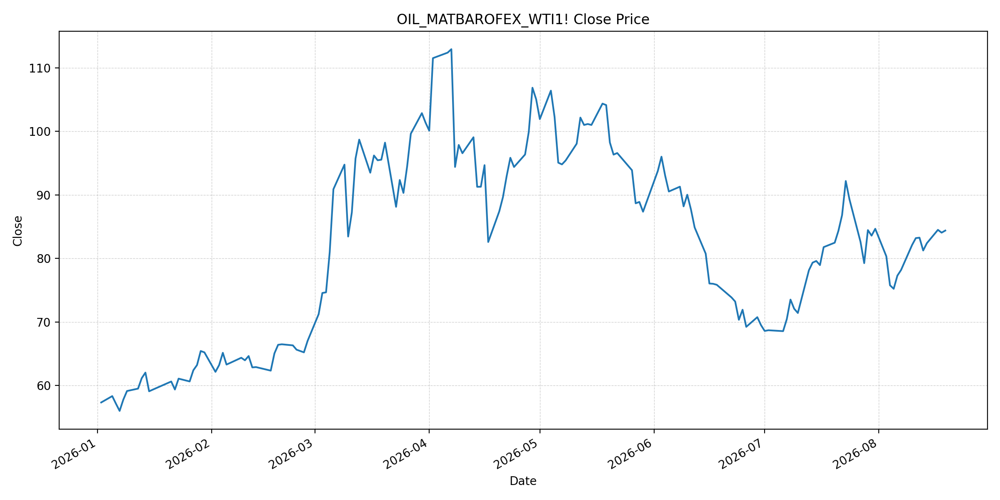
JEPXシステムプライス
JEPXは受渡日ベースの最新非空値で評価しています。最新値は 2026-08-20 分です。先週終値は 2026-08-13、先月終値は 2026-07-31 時点の直近値で評価しています。
| エリア | 当日価格 | 前日価格 | 前日比（％） | 先週終値 | 先週比（％） | 先月終値 | 先月比（％） | 過去最高値 | 最高値比（％） |
|---|---|---|---|---|---|---|---|---|---|
| システム | 22.22 | 21.61 | 2.82 | 12.87 | 72.65 | 23.48 | -5.37 | 64.06 | -65.32 |
| 北海道 | 19.21 | 18.21 | 5.49 | 14.00 | 37.21 | 14.86 | 29.27 | 73.92 | -74.01 |
| 東北 | 19.49 | 18.29 | 6.56 | 13.97 | 39.51 | 18.04 | 8.04 | 84.92 | -77.05 |
| 東京 | 22.72 | 22.62 | 0.44 | 14.19 | 60.11 | 23.85 | -4.74 | 86.13 | -73.62 |
| 中部 | 24.08 | 23.76 | 1.35 | 14.07 | 71.14 | 23.83 | 1.05 | 52.06 | -53.75 |
| 北陸 | 23.86 | 23.33 | 2.27 | 11.97 | 99.33 | 22.32 | 6.90 | 46.48 | -48.67 |
| 関西 | 20.50 | 20.15 | 1.74 | 11.18 | 83.36 | 22.13 | -7.37 | 46.48 | -55.90 |
| 中国 | 18.22 | 18.97 | -3.95 | 11.18 | 62.97 | 18.78 | -2.98 | 46.48 | -60.80 |
| 四国 | 16.73 | 17.42 | -3.96 | 10.21 | 63.86 | 16.74 | -0.06 | 46.48 | -64.01 |
| 九州 | 18.22 | 18.97 | -3.95 | 11.17 | 63.12 | 17.46 | 4.35 | 40.54 | -55.06 |
LNG先物価格
最新値は 2026-08-19 の LNG(close) です。前日価格は 2026-08-18、先週終値は 2026-08-12、先月終値は 2026-07-31 時点の直近値で評価しています。
| 当日価格 | 前日価格 | 前日比（％） | 先週終値 | 先週比（％） | 先月終値 | 先月比（％） | 過去最高値 | 最高値比（％） |
|---|---|---|---|---|---|---|---|---|
| 3510.00 | 3431.00 | 2.30 | 3318.00 | 5.79 | 3307.00 | 6.14 | 10319.00 | -65.99 |
石油先物価格
最新値は 2026-08-19 の OIL(close) です。前日価格は 2026-08-18、先週終値は 2026-08-12、先月終値は 2026-07-31 時点の直近値で評価しています。
| 当日価格 | 前日価格 | 前日比（％） | 先週終値 | 先週比（％） | 先月終値 | 先月比（％） | 過去最高値 | 最高値比（％） |
|---|---|---|---|---|---|---|---|---|
| 84.39 | 84.06 | 0.39 | 83.27 | 1.35 | 84.67 | -0.33 | 123.70 | -31.78 |
ニュース
イラン情勢に関するニュース
- UAEは8月19日、イランからのミサイル攻撃が再開したとして、イランとの全ての貿易を停止しました。米国の制裁・封鎖下にあるイランの地域的な孤立を一段と強める動きです。参照: AP, 2026-08-19
- オマーンとイランによる通航管理の協議は続いていますが、米国は共同管理を含む案に反発しています。海峡の再開条件を巡る政治的な隔たりは残っています。参照: AP, 2026-08-18
ホルムズ海峡経由の石油・LNGに関するニュース
- APによると、イランはホルムズ海峡の支配を維持する動きの一環として船舶を継続的に攻撃しており、過去2週間にはADNOC保有の石油・ガスタンカー4隻が攻撃を受けました。参照: AP, 2026-08-19
- 先週の確認済み通航は95隻で前週比19.5%減でした。実通航量の回復が遅れるほど、石油・LNGの輸送日数、保険料、スポット調達の不確実性が残ります。参照: AP, 2026-08-18
ホルムズ海峡経由でない石油・LNGに関するニュース
- 過去24時間で、ホルムズ以外の石油・LNG供給量を直接変更する主要な新規公表は確認できませんでした。
- JOGMECの8月17日更新では、東北アジア向けJKMは中東情勢の交渉停滞と地政学リスクを背景に上昇し、日本の発電用LNG在庫は8月9日時点で203万トンでした。代替調達時にも在庫とスポット価格の双方を確認する必要があります。参照: JOGMEC, 2026-08-17更新
日本国内のイラン戦争に関係するニュース
- 過去24時間で、JEPX制度、国内電力需給ルール、または日本政府のイラン戦争関連対策を直接変更する主要な新規公表は確認できませんでした。
- 政府は、ホルムズ海峡を巡る状況の早期沈静化と安全な航行の確保を重視しています。現時点では制度変更ではなく、外交・供給状況の監視が中心です。参照: 首相官邸, 2026-08-12
インサイト
ニュース事項による日本の電力市場への影響（短期：数日〜1週間）
- JEPXシステムプライスは 22.22 円/kWhで前日比 2.82%、先週比 72.65% と上昇しました。中部 24.08 円/kWh、北陸 23.86 円/kWh、東京 22.72 円/kWhが高く、地域需給の引き締まりが続いています。
- LNGは 3510.00 で先週比 5.79%、WTIは 84.39 ドルで 1.35% 上昇しました。UAEとイランの関係悪化、船舶への攻撃継続は短期の燃料リスクプレミアムを支える要因です。
- 数日から1週間では、海峡通航の安全性が確認されることが下振れ要因となる一方、攻撃の拡大、貿易制限、保険引受の厳格化は燃料調達とJEPXの上振れリスクです。
ニュース事項による日本の電力市場への影響（長期：1ヶ月〜半年）
- JEPXシステムは先月比 -5.37%、LNGは 6.14%、WTIは -0.33% です。海峡の実通航量が低位にとどまれば、LNGの上昇が火力限界費用へ波及する可能性があります。
- 北海道は先月比 29.27%、東北 8.04%、北陸 6.90% と上昇する一方、関西 -7.37%、東京 -4.74% と低下しています。燃料市況だけでなく、エリア別の需給・連系制約を併せて追う必要があります。
- 過去最高値比ではシステム -65.32%、LNG -65.99%、WTI -31.78% です。1ヶ月から半年は、ホルムズの実通航量、UAE・イラン間の緊張、国内在庫の補充速度を分けて監視することが重要です。